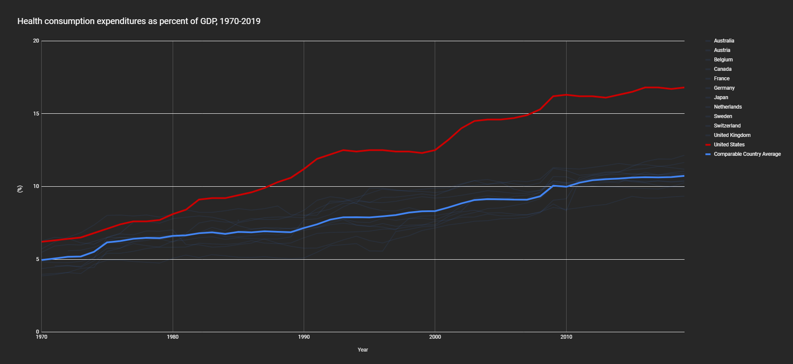

On Medicare for All
Healthcare is a human right. Strangely enough, that is a highly controversial assertion nowadays, well, at least in the land of the “free.” According to a recent poll by the Pew Research Center, nearly 40 percent of Americans would disagree with that statement. That means that if you were in a room with another 9 Americans, four would disagree with you, even though 7 Americans in that room fear they will not be able to afford health care this year, and two already cannot. This has got so bad that 5 of them acknowledge that cost was a factor in them actively skipping healthcare, including, although not limited to, doctor visits, medications, vaccinations, annual exams, screenings, vision checks, and routine blood work.
Strangely enough, the US government would disagree. This disagreement goes against the UN and the WHO, with the UN declaring that“Everyone has the right to a standard of living adequate for the health and well-being of himself and of his family, including food, clothing, housing, medical care and necessary social services.” and the WHO established the right to health as a “fundamental, inalienable human right.” I am not, nonetheless, here to discuss the philosophical argumentation behind the idea of healthcare as a human right; I am here to discuss the consequences this notion, or better put, absence of notion, has had in the US. I will be tackling two chief areas of discussion in this article, difficulties with the current healthcare system, and my thoughts on universal healthcare aka. M4A.
Problems With the US Healthcare System
The quality and accessibility of American healthcare services are atrocious for a “first world” country. This is the consensus opinion by any academic and professional in the industry and not just my opinion. The US was ranked the worst among industrialized nations for the fifth time, according to the 2014 Commonwealth Fund Survey. This is exacerbated when we see that the US is also the country with the highest health expenditure amongst all other “first world” countries, and this incredible spending has not diminished; on the contrary, it has steadily escalated over time.

The question following this would be, “is this a public issue or a private issue?” To tackle this question, we have to dive into the American healthcare system. I recommend watching the vox video on “The real reason American healthcare is so expensive.” To summarize, the American government spends just over the OECD average on public healthcare, yet it spends just under six times the amount compared to the OECD average in its private sector. The spending issue is not on the public sector but, in fact, the private one. “Perhaps private companies just charge a lot because they offer a better product than their OECD counterparts though?” The average out-of-pocket monthly diabetes cost in the US is $360; in the UK, it is $65, and in countries such as France, Italy, or Portugal, it is $0. The same healthcare product’s price will vary vastly whether it is in the US or not. However, the pharmaceutical industry will explain that this money is going into R&D to explain the high cost, despite it being verifiably false. A 2008 study found that “Pharmaceutical companies spend almost twice as much on promotion as they do on R&D,” and a 2002 study found similar results. This is contrasted by a 2018 study that found opposite results in Canada, which has a vastly smaller private healthcare sector. The idea that high pharmaceutical drug spending in the US contributes to innovation has also been debunked countless times, like in this 2010 study.
All these issues have tremendous and disastrous effects on the American population. 50% of polled Americans fear medical bankruptcy. 42% of cancer patients lose their life savings in two years, 38% deplete life assets, and 65% enter medical debt (study). Tens of thousands of Americans die each year from lack of insurance (study). Around 27m people, 10 percent of the non-elderly US population) have no insurance at all. Compared with other OECD countries, the US ranks at or near the bottom on life expectancy, infant mortality, adolescent pregnancy, sexually transmitted infections, drug-related mortality, obesity, diabetes, heart disease, lung disease and arthritis.
This issue stems from a deeper problem in our society: the profit motive for essential industries. A doctor in the US will not see their patients as humans; they look at them as paychecks. This leads to doctors and practitioners putting profit over humans’ lives, leading to overprescription, cutting costs, and a general lack of consideration. This is detrimental for industries such as healthcare because healthcare is essential. No matter how high they price the drug and no matter what quality of the drug they provide, there will always be demand for it; this is what we call inelastic demand. The sky's the limit for big pharma when they want to price the drug and what corners they can cut, which they will try to reach if driven by profit.
Medicare for All
Universal healthcare is a highly controversial policy; this stems from two critical reasons, firstly people see this option as highly expensive; secondly, people see the government as ineffective in such industries.
The fiscal aspect of M4A is fascinating; this is since people believe it to be costly, but according to numerous meta-analyses, peer-reviewed journals, and studies, this not only seems to be false but has found that Universal health care could save money if adequately implemented. An extensive meta-analysis study found that 91% of peer-reviewed journals say that Medicare-For-All would save money in both the short-run and the long run. It found and compared cost analyses of 22 single-payer plans for the US or individual states “The largest source of savings was simplified payment administration (median 8.8%), and the best predictors of net savings were the magnitude of utilization increase, and savings on administration and drug costs.” Another study found that “Medicare for All could reduce total health care spending in the US by nearly 10 percent, to $2.93 trillion, while creating stable access to good care for all US residents.” This assessment had largely positive reviews from multiple experts in the field. Even the Mercatus Center, a right-wing think tank, recently found about $2 trillion in net savings over ten years from a single-payer Medicare for All system. A critical part of the cost issue in the current system is administrative costs; instead, if we had one public plan negotiating licenses with healthcare providers, we could cut 75% of administrative costs, which in total cost the US $812 billion. Administrative costs are so high because thousands of insurance companies individually negotiate benefit rules and rates with thousands of hospitals and doctors. Furthermore, they even have different billing procedures, which puts a further burden on healthcare providers. “Administrative savings from Medicare for All would be about $600 billion a year. Savings on prescription drugs would be between $200 billion and $300 billion a year, if we paid about the same price as other wealthy countries pay for their drugs. A Medicare for All system would save still more with implementation of global health care spending budgets.” no matter how you put it, the removal of the private sector in the healthcare industry will inevitably cut costs due to the inability to drive up costs.
So we have established that it will be cheaper, but will the public sector be more efficient than the private sector and provide better healthcare? Studies also show that every year, 68,000 lives and 1.73 million life-years will be saved, relative to the current system. Another study also found that Medicare beneficiaries are more satisfied than private insurance. “Medicare beneficiaries report fewer problems getting access to care, greater confidence about their access, and fewer instances of financial hardship as a result of medical bills.” M4A would
Provide guaranteed health care to everyone;
Provide access to home and community-based care for all who need it;
Guarantee coverage for dental, vision, and hearing services;
End medical debt and medical bankruptcies;
Reduce administrative waste by $500 billion per year;
End price gouging by pharmaceutical companies; and
Put an end to corporations profiting off the sick.
When discussing solutions to the current healthcare problems, two options are pitted against each other, Medicare for All and the public option. To find the best solution, we need to compare both systems. A public option would Cost even more than the wasteful status quo, around $175 billion more per year. Moreover, because it would not have comparable savings from efficiencies and negotiating power, it would cost $600 billion a year more than Medicare for All without providing generous coverage. A public option would also leave millions uninsured or underinsured and subject to unnecessary out-of-pocket costs, including copays and deductibles. It would leave more than 100 million Americans at the whim of private for-profit insurance, so they would be under constant fear of disruption when their employer changes plans, or they lose or change jobs. It would force small business owners to continue to struggle with whether they can afford to provide insurance to their employees. Furthermore, it would enable for-profit insurers to cherry-pick healthier Americans, threatening the financial solvency of the public programs. Overall a public option will not fix anything; it could even exacerbate specific issues.
M4A is a necessity in modern-day combat inequity and all problems in the American healthcare system. The fact that the current system is inherently flawed demonstrates the necessity for change. When looking at possible solutions, the public option is nowhere near the quality of M4A; it is more expensive and more inequitable. Every year tens of thousands of Americans fall victim to the exploitative and primitive healthcare system the US currently uses; it is a matter of absolute urgency that M4A is correctly implemented and adopted before more Americans needlessly die or become indebted for the rest of their lives due to the greed of big pharma.
Sources:
How does health spending in the US compare to other countries?
Medicare for All: What Is It and How Will It Work?
U.S. Health Care from a Global Perspective, 2019: Higher Spending, Worse Outcomes?
60% in US say health care coverage is government’s responsibility
Survey: 1 in 5 Americans can’t afford necessary care.
66% of Americans fear they won’t be able to afford health care this year
Nearly 1 in 4 Americans are skipping medical care because of the cost | I wonder what
Wikipedia – Universal Declaration of Human Rights
The real reason American health care is so expensive
https://web.archive.org/web/20100219022132/https://www.familiesusa.org/assets/pdfs/PPreport89a5.pdf
US Pharmaceutical Innovation in an International Context
50% in US Fear Bankruptcy Due to Major Health Event
Death or Debt? National Estimates of Financial Toxicity in Persons with Newly-Diagnosed Cancer
Over 26,000 annual deaths for uninsured: report
Key Facts about the Uninsured Population | KFF
Summary - US Health in International Perspective - NCBI Bookshelf
Overprescribed Medications for US Adults: Four Major Examples
PERI - Economic Analysis of Medicare for All
PERI - Reviewer Assessments of Economic Analysis of Medicare for All
The Costs of a National Single-Payer Healthcare System
Medicare for all would save $600 billion a year in administrative costs
PERI - Economic Analysis of Medicare for All
Medicare For All Would Improve Hospital Financing
Medicare Versus Private Insurance: Rhetoric And Reality